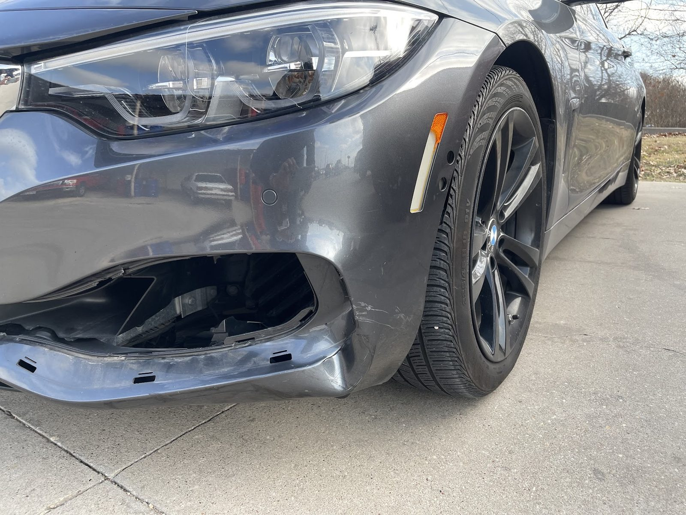

Collision repair
Restoring cars after an accident, from bumpers and lamps to the sensors behind them.
- Bumpers and fog lights
- Computerized frame measuring
- Insurance paperwork handled
ProTech · Del Valle
ProTech Body Shop serves Del Valle from Austin.
ProTech Body Shop is based in Austin and works with customers from Del Valle. Call (512) 834-3540 to ask about timing and directions.

Restoring cars after an accident, from bumpers and lamps to the sensors behind them.

Computerized color matching, with a lifetime warranty on paint jobs.
Hail damage and door dings removed while keeping the factory finish.
Frame straightening and structural repair using computerized measuring.

BMW, Mercedes-Benz, Audi and fiberglass Corvettes.
Interior and exterior detailing, paint correction, ceramic coating and headlight restoration.
391 Google reviews
If you need LITERALLY any kind of body work done on your car, THIS is the place! Nour and team are amazing. Detailed experience below: I was driving to Dallas when a piece of debris flew from another vehicle and hit my bumper. It took out the fog light, lamp housing and some sensors.
I cannot recommend Protech Body Shop highly enough. After a stressful situation dealing with a low initial estimate from my insurance adjuster, the team at Protech stepped in and completely looked out for my best interests. They took over the coordination with the insurance company, handled the entire process flawlessly, and made sure my vehicle was repaired properly without any added stress on my end.
I just got done with my Corvette getting fixed here. It was a C5 z06. If you know anything about cars, that’s not normal body work as it is a type of fiberglass called SMC. This was an insurance job. I had AAA. Not only did they do great work the first time, but I actually went back two days after I received my car because my speaker quit working.
Had a great experience at this family-owned auto body shop. Nour was very helpful. My car was fixed within an hour of dropping it off. Very nice waiting room as well. Highly recommend for anyone looking for a reliable auto body shop in North Austin!
Call for a free estimate. We work with all major insurance companies.